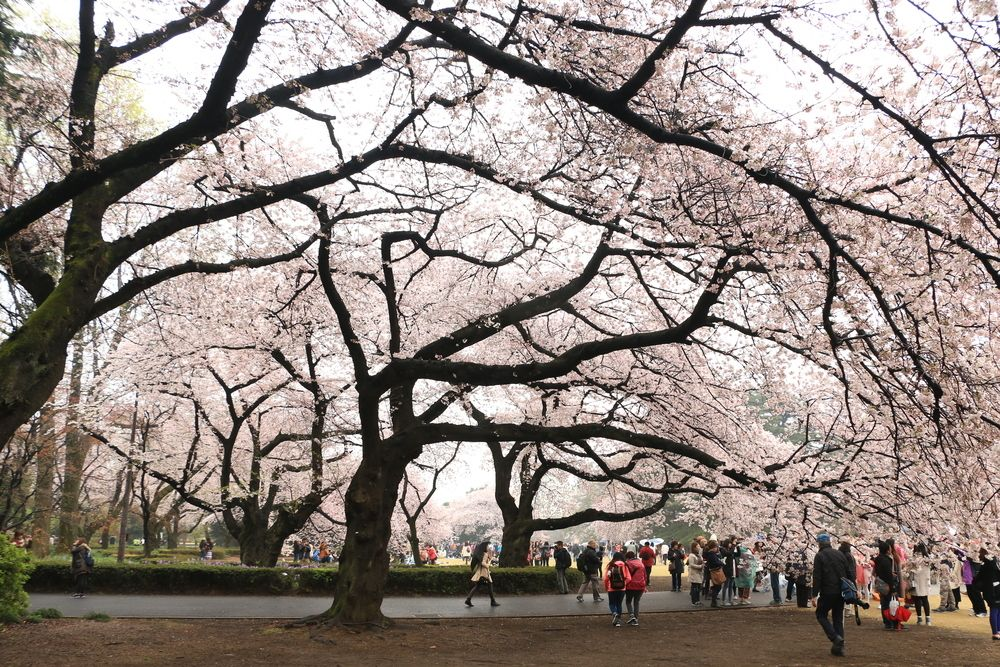
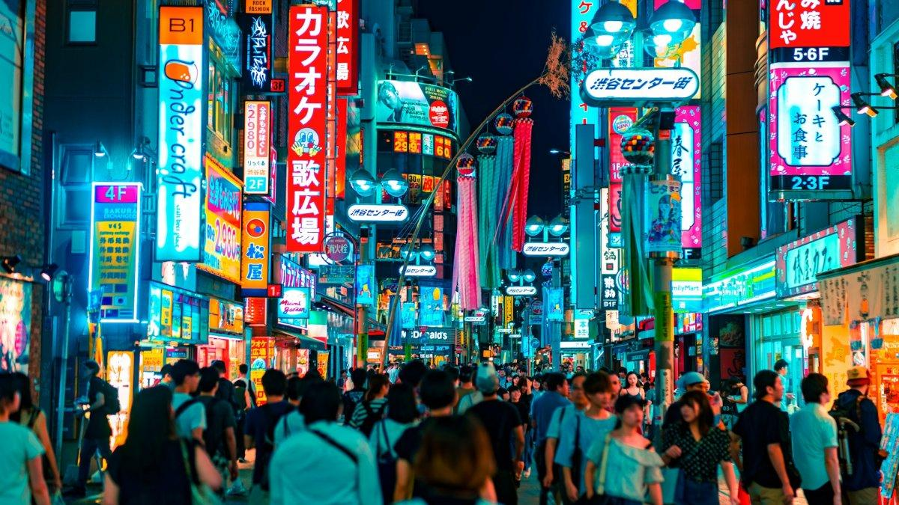

Tokyo
Considerada uma das cidades mais vibrantes do mundo, Tokyo é uma capital fantástica, completa e com opções ilimitadas. Ela oferece uma imersão em valores diferentes e nos proporciona um choque cultural nos mais diversos âmbitos. A cidade é viva noite e dia, tem ótimos pontos turísticos, excelente gastronomia (já foi considerada a cidade com mais restaurantes nos Guias Michelin) e é simplesmente um paraíso para fazer compras.
Entendendo Tokyo e o Japão
Moderna, cheia de letreiros com propagandas e com mais de 37 milhões de pessoas em sua região metropolitana (mais do que a população de muitos países), Tokyo sabe harmonizar seu crescimento e globalização ao tradicionalismo. Muito próximo de áreas de grande movimento, existem templos antigos e, ao lado de estações de trens complexas e cheias de gente, existem parques que funcionam como um refúgio de todo aquele burburinho urbano. Sua organização é mais uma característica marcante da capital, que destoa de muitas outras cidades na Ásia.

O que ver e fazer em Tokyo
Entre os principais atrativos da cidade estão a super Tokyo Skytree, construída para a ser maior torre do mundo, com 643 metros de altura. Outra atração interessante é o Tsukiji Market, onde acontece o leilão de atum no amanhecer de cada dia. O cruzamento de Shibuya, considerado o mais movimentado do mundo, figura entre os locais que devem ficar no topo de sua lista de afazeres, assim como um passeio por Shinjuku, que tem uma das estações mais movimentadas do mundo. Com tanta criatividade, um trabalho tão perfeccionista e tantas pessoas na cidade, são muitas as coisas em Tokyo que são as “maiores do mundo”.
O que esperar de Tokyo
Como já não há tanto espaço para crescer horizontalmente, Tokyo cresce verticalmente. Shoppings e edifícios com vários andares fazem parte do pano de fundo. As lojas de departamento, que são maravilhosas para quem quer fazer compras, também são verticais, com pisos destinados apenas às comidas! Muitas pessoas pensam que na cozinha japonesa existem apenas sushis e sashimis, mas a gastronomia vai muito além e, por ser uma cidade moderna, você encontra cardápios muito variados. Guarde sempre um espacinho para os doces, que não devem decepcionar. Tudo no Japão é visualmente muito atraente e é bem provável que algumas vezes você seja conquistado pelos olhos.

Embora tenha muitos pontos turísticos e diversos parques que ficam lindos na primavera o melhor de Tokyo é estar em Tokyo, independente da época do ano. O simples hábito de caminhar pelas ruas e viver a cidade é uma enorme experiência, afinal, tudo é muito diferente. Andar nas ruas observando as pessoas, o vai-vem nas movimentadas estações, as gentilezas simples do dia a dia, os sorrisos, o respeito pelo próximo e os inúmeros cumprimentos com cabeça são experiências únicas. Desde a forma como as pessoas tratam umas às outras aos produtos expostos nas vitrines, tudo é diferente do Brasil e é justamente a diversidade que encanta.
O Japão não é um destino barato, mas o que o país proporciona aos turistas é impagável. Observar a cultura e absorver seus ensinamentos é um aprendizado para a vida toda.
Quando ir a Tokyo e ao Japão
Tokyo é um destino que pode ser visitado o ano inteiro e que sempre terá o que ser visto. No inverno costuma fazer frio na cidade, então, uma sugestão é tentar visitá-la em períodos de transição entre as estações, como a primavera e o outono, quando a Tokyo não está nem muito fria e nem muito quente. A primavera na cidade é lindíssima, principalmente durante o período em que as cerejeiras, árvores típicas do Japão, ficam floridas!